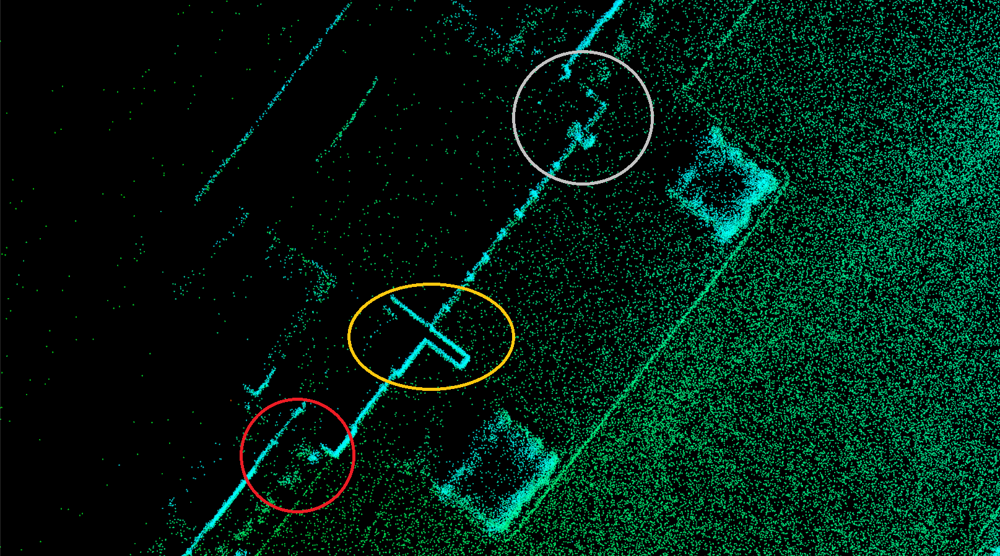

传感器标定 FAQs¶
如何查看传感器是否有数据输出?¶
使用 rostopic 命令。例如，查看 HDL-64ES3 的输出，可以在终端中输入:
rostopic echo /apollo/sensor/velodyne64/VelodyneScanUnified
若该 topic 的数据会显示在终端上，则激光雷达工作正常。
如何查看车辆的定位状态?¶
以使用 Novatel 组合惯导为例，在终端中输入:
rostopic echo /apollo/sensor/gnss/ins_stat
找到“pos_type”字段，若该字段的值为 56，则表示进入了良好的定位状态 (RTK_FIXED)， 可以用于标定。若不为 56，则无法获得可靠的标定结果。
如何进行质检?¶
目前进行质检方法主要通过人工来完成。标定完成后，页面会提供标定过程中拼接得到的点 云。若标定结果良好，会得到锐利和清晰的拼接点云，可反映出标定场地的细节。通常质检 的参照物有平整的建筑立面、路灯和电线杆以及路沿等。若标定质量较差，则会使拼接点云 出现一些模糊、重影的效果。图 1 是两张不同标定质量的拼接点云对比。

(a)

(b)
图1. (a) 高质量的标定结果 (b) 质量较差的标定结果。
如何解决标定程序权限错误？¶
Output path 需要write权限来创建文件夹以及保存标定结果，若缺少相关权限，则会出
现如下错误：
terminate called after throwing an instance of ‘boost::filesystem::filesystem_error’ what(): boost::filesystem::create_directories: permission denied: "***"
输入以下命令，来为 Output path 添加write权限：
# 为output path(如：/apollo/modules/calibration/data/mkz8)添加write权限
sudo chmod a+w /apollo/modules/calibration/data/mkz8 -R
如何解决执行 sensor_calibration.sh 时出现的权限错误？¶
Log 存储文件夹需要write权限来创建日志，若缺少相关权限，则会出现如下错误：
tee: /apollo/data/log/***.out: permission denied
输入以下命令，来为脚本添加write权限：
sudo chmod a+x /apollo/data/log